<!DOCTYPE html>
<html lang="en">
<head>
  <meta charset="utf-8">
  <meta name="viewport" content="width=device-width, initial-scale=1.0">
  <title>Chapter 7: Chemical Reactions of Organic Compounds (Part 2) - SCERT Class 10 Chemistry</title>
  <style>

:root {
  --bg-color: #fcfcfd;
  --card-bg: #ffffff;
  --text-color: #1e293b;
  --text-muted: #64748b;
  --primary-color: #0284c7;
  --primary-light: #e0f2fe;
  --border-color: #e2e8f0;
  --radius: 10px;
  --shadow: 0 4px 6px -1px rgb(0 0 0 / 0.05), 0 2px 4px -2px rgb(0 0 0 / 0.05);
}

body {
  font-family: -apple-system, BlinkMacSystemFont, "Segoe UI", Roboto, "Noto Sans Malayalam", "Manjari", "Gayathri", sans-serif;
  background-color: var(--bg-color);
  color: var(--text-color);
  line-height: 1.8;
  font-size: 1.1rem;
  margin: 0;
  padding: 0;
}

.container {
  max-width: 860px;
  margin: 0 auto;
  padding: 2.5rem 1.5rem 5rem 1.5rem;
}

header {
  margin-bottom: 2.5rem;
  padding-bottom: 1.5rem;
  border-bottom: 2px solid var(--border-color);
}

.badge-row {
  display: flex;
  gap: 0.5rem;
  margin-bottom: 0.75rem;
}

.badge {
  display: inline-block;
  font-size: 0.75rem;
  font-weight: 700;
  text-transform: uppercase;
  letter-spacing: 0.05em;
  padding: 0.25rem 0.65rem;
  border-radius: 9999px;
  background: var(--primary-light);
  color: var(--primary-color);
}

.badge-medium {
  background: #fef3c7;
  color: #b45309;
}

h1 {
  font-size: 2.1rem;
  font-weight: 800;
  margin: 0.5rem 0 1rem 0;
  line-height: 1.3;
  color: #0f172a;
}

.nav-bar {
  display: flex;
  justify-content: space-between;
  margin: 1.5rem 0;
  font-size: 0.95rem;
}

.nav-bar a {
  color: var(--primary-color);
  text-decoration: none;
  font-weight: 600;
  padding: 0.5rem 1rem;
  border-radius: var(--radius);
  background: var(--card-bg);
  border: 1px solid var(--border-color);
  transition: all 0.2s ease;
}

.nav-bar a:hover {
  background: var(--primary-light);
  border-color: var(--primary-color);
}

.nav-bar .disabled {
  color: var(--text-muted);
  pointer-events: none;
  border-color: transparent;
  background: transparent;
}

.page-section {
  background: var(--card-bg);
  border: 1px solid var(--border-color);
  border-radius: var(--radius);
  box-shadow: var(--shadow);
  padding: 2rem;
  margin-bottom: 2.5rem;
}

.page-header {
  display: flex;
  align-items: center;
  justify-content: space-between;
  margin-bottom: 1.25rem;
  padding-bottom: 0.5rem;
  border-bottom: 1px dashed var(--border-color);
}

.page-number {
  font-size: 0.8rem;
  font-weight: 700;
  text-transform: uppercase;
  color: var(--text-muted);
  letter-spacing: 0.05em;
}

.page-content p {
  margin: 0 0 1.25rem 0;
  white-space: pre-wrap;
  word-break: break-word;
}

.page-content p:last-child {
  margin-bottom: 0;
}

.diagram-card {
  margin: 2rem 0;
  text-align: center;
  background: #f8fafc;
  border: 1px solid var(--border-color);
  border-radius: var(--radius);
  padding: 1rem;
  overflow: hidden;
}

.diagram-card img {
  max-width: 100%;
  height: auto;
  border-radius: calc(var(--radius) - 4px);
  display: inline-block;
  box-shadow: 0 2px 4px rgba(0,0,0,0.04);
}

.diagram-card figcaption {
  font-size: 0.85rem;
  color: var(--text-muted);
  margin-top: 0.75rem;
  font-weight: 500;
}

footer {
  margin-top: 3rem;
  padding-top: 2rem;
  border-top: 2px solid var(--border-color);
}

  </style>
</head>
<body>
  <div class="container">
    <header>
      <div class="badge-row">
        <span class="badge badge-medium">English Medium</span>
        <span class="badge">SCERT Class 10 Chemistry</span>
        <span class="badge">Part 2</span>
      </div>
      <h1>Chapter 7: Chemical Reactions of Organic Compounds (Part 2)</h1>
      <div class="nav-bar"><a href="chapter_06_nomenclature_of_organic_compounds_and_isomerism_part_2.html">← Chapter 6: Nomenclature of Organic Compounds and Isomerism (Part 2)</a><a href="index.html">☰ Index</a><span class="nav-bar disabled"></span></div>
    </header>

    <main>
      <section class="page-section" id="page-47">
  <div class="page-header"><span class="page-number">Page 47</span></div>
  <figure class="diagram-card" id="fig_ch07_p047_01">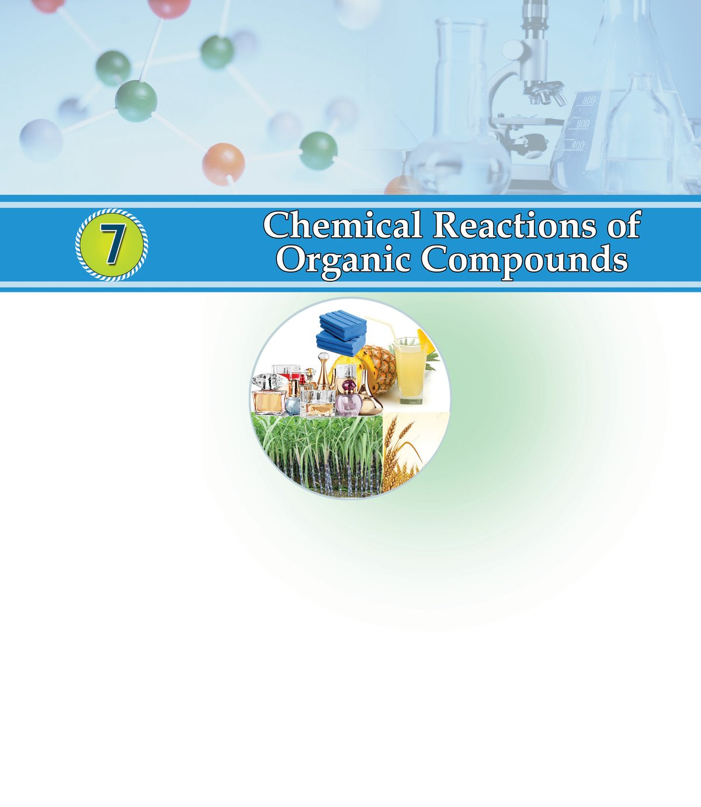<figcaption>Figure fig_ch07_p047_01 (Page 47)</figcaption></figure>
  <figure class="diagram-card" id="fig_ch07_p047_02">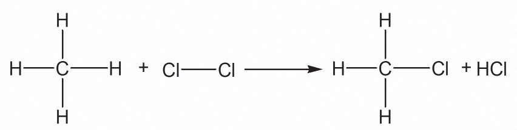<figcaption>Figure fig_ch07_p047_02 (Page 47)</figcaption></figure>
  <figure class="diagram-card" id="fig_ch07_p047_03"><figcaption>Figure fig_ch07_p047_03 (Page 47)</figcaption></figure>
  <div class="page-content">
    <p>The various substances that we use in different fields of daily life are the contributions
of organic chemistry. The different types of organic compounds such as medicines,
polymers, fuels, alcohols, soaps, detergents etc. are prepared by different organic
reactions. Let us see some of such basic chemical reactions.
Substitution Reactions
Examine the different stages of the reaction of methane (CH4) with chlorine in the presence
of sunlight.</p>
    <p>Stage 1
Methane</p>
    <p>Chloromethane</p>
    <p>Here, one hydrogen atom of methane molecule is replaced by one
chlorine atom, isn&#x27;t it? If this process continues....
Complete the stages 2, 3, 4 respectively.</p>
  </div>
</section><section class="page-section" id="page-48">
  <div class="page-header"><span class="page-number">Page 48</span></div>
  <figure class="diagram-card" id="fig_ch07_p048_01"><figcaption>Figure fig_ch07_p048_01 (Page 48)</figcaption></figure>
  <figure class="diagram-card" id="fig_ch07_p048_02">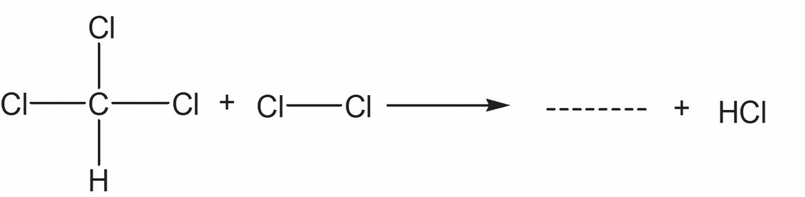<figcaption>Figure fig_ch07_p048_02 (Page 48)</figcaption></figure>
  <figure class="diagram-card" id="fig_ch07_p048_03">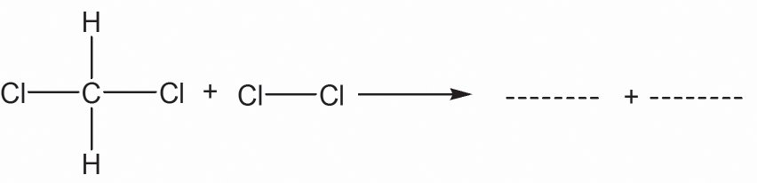<figcaption>Figure fig_ch07_p048_03 (Page 48)</figcaption></figure>
  <figure class="diagram-card" id="fig_ch07_p048_04">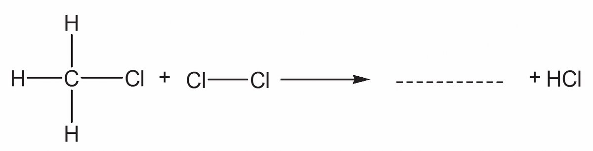<figcaption>Figure fig_ch07_p048_04 (Page 48)</figcaption></figure>
  <figure class="diagram-card" id="fig_ch07_p048_05"><figcaption>Figure fig_ch07_p048_05 (Page 48)</figcaption></figure>
  <div class="page-content">
    <p>Chemistry $ Standard - X
Stage 2</p>
    <p>Dichloromethane
Stage 3
Trichloromethane
(Chloroform)
Stage 4</p>
    <p>Tetrachloromethane
(Carbontetrachloride)</p>
    <p>When methane reacts with chlorine each hydrogen atom of methane
is replaced successively by chlorine atom. As a result, a mixture of
CH 3Cl (Chloromethane), CH 2Cl 2 (dichloromethane), CHCl 3
(trichloromethane) and CCl4 (Tetrachloromethane) is formed. Such
reactions are called Substitution reactions.
A reaction in which an atom or a group in a compound is
replaced by another atom or a group is called substitution
reaction.
$</p>
    <p>What are the compounds formed when CH3 ⎯ CH3 (ethane)
undergoes substitution reaction with chlorine? Write them.</p>
    <p>Addition Reactions
$</p>
    <p>Write down the structural formulae of ethane and ethene.</p>
    <p>$</p>
    <p>What is the peculiarity of the carbon - carbon bond in
ethene?</p>
    <p>You know that ethene is an unsaturated compound due to the
presence of the carbon - carbon double bond.
When unsaturated compounds take part in chemical reactions
they tend to form saturated compounds.</p>
    <p>120</p>
  </div>
</section><section class="page-section" id="page-49">
  <div class="page-header"><span class="page-number">Page 49</span></div>
  <figure class="diagram-card" id="fig_ch07_p049_01"><figcaption>Figure fig_ch07_p049_01 (Page 49)</figcaption></figure>
  <figure class="diagram-card" id="fig_ch07_p049_02">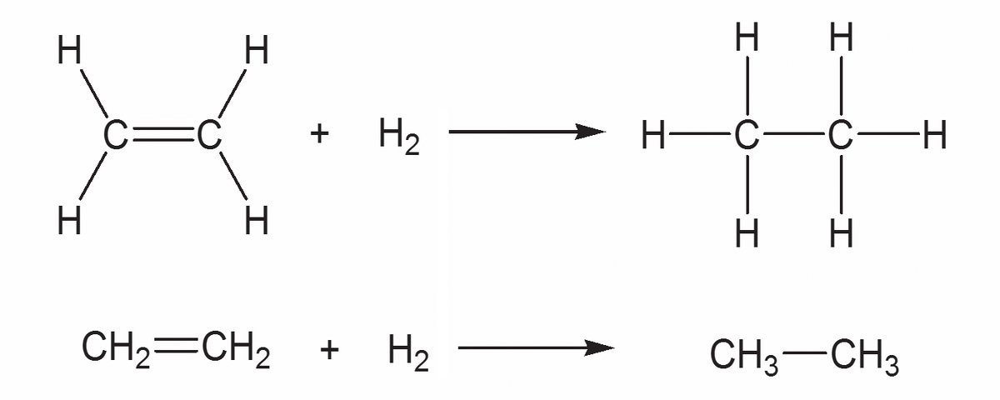<figcaption>Figure fig_ch07_p049_02 (Page 49)</figcaption></figure>
  <figure class="diagram-card" id="fig_ch07_p049_03">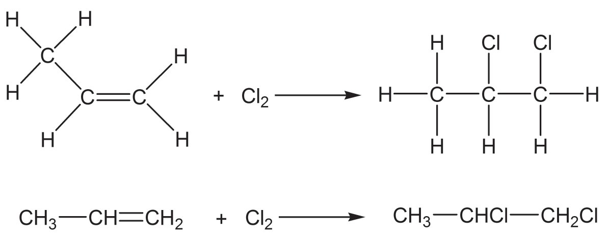<figcaption>Figure fig_ch07_p049_03 (Page 49)</figcaption></figure>
  <div class="page-content">
    <p>Chemical reactions of organic compounds</p>
    <p>Let us examine a chemical reaction of ethene molecule.
The chemical equation of ethene reacting with hydrogen in the
presence of the nickel (Ni) catalyst at high temperature is given.</p>
    <p>Ni</p>
    <p>Ni
Ethene</p>
    <p>$</p>
    <p>Ethane</p>
    <p>What do we get as the product?</p>
    <p>Let us examine another similar reaction.</p>
    <p>Propene</p>
    <p>1, 2 - Dichloropropane</p>
    <p>$</p>
    <p>Which hydrocarbon is the reactant here?</p>
    <p>$</p>
    <p>Is the product saturated or unsaturated?</p>
    <p>Identify the products in the following addition reactions and
complete table 7.1.
Chemical reaction</p>
    <p>Product</p>
    <p>IUPAC name of the</p>
    <p>product
CH2=CH2 + Cl2</p>
    <p>...............................</p>
    <p>...............................</p>
    <p>CH2=CH2 + HCl</p>
    <p>...............................</p>
    <p>...............................</p>
    <p>CH3−CH=CH2 + H2</p>
    <p>...............................</p>
    <p>...............................</p>
    <p>CH3−CH=CH−CH3 + HBr</p>
    <p>...............................</p>
    <p>...............................</p>
    <p>Table 7.1.</p>
    <p>121</p>
  </div>
</section><section class="page-section" id="page-50">
  <div class="page-header"><span class="page-number">Page 50</span></div>
  <figure class="diagram-card" id="fig_ch07_p050_01"><figcaption>Figure fig_ch07_p050_01 (Page 50)</figcaption></figure>
  <figure class="diagram-card" id="fig_ch07_p050_02">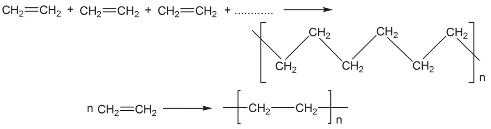<figcaption>Figure fig_ch07_p050_02 (Page 50)</figcaption></figure>
  <figure class="diagram-card" id="fig_ch07_p050_03">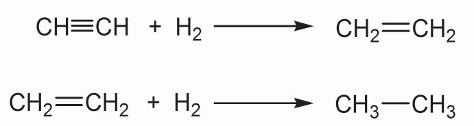<figcaption>Figure fig_ch07_p050_03 (Page 50)</figcaption></figure>
  <figure class="diagram-card" id="fig_ch07_p050_04"><figcaption>Figure fig_ch07_p050_04 (Page 50)</figcaption></figure>
  <div class="page-content">
    <p>Chemistry $ Standard - X</p>
    <p>Similarly, take note of the balanced chemical equation for the reaction
of the alkyne, ethyne with hydrogen.</p>
    <p>Ethyne</p>
    <p>Ethene</p>
    <p>Ethene</p>
    <p>Ethene</p>
    <p>Reactions in which unsaturated organic compounds
with double bond or triple bond react with other molecules to
form saturated compounds are called addition reactions.</p>
    <p>Polymerisation
You have learned that ethene molecules undergo addition reaction
to form saturated compounds.
Consider the reaction in which a large number of ethene molecules
combine under high pressure and temperature in the presence of a
catalyst. The product formed here is polythene.
Ethene molecules</p>
    <p>Ethene</p>
    <p>polythene.</p>
    <p>Polymerisation is the process in which a large number of
simple molecules combine under suitable conditions to form
complex molecules. The product molecules are called
polymers.
The simple molecules which combine in this manner are called
monomers. We use a number of natural and man - made polymers
in our daily life.
PVC (Polyvinyl Chloride) is a polymer commonly used for making
pipes. It is formed by the polymerisation of a large number of
chloroethene (Vinyl chloride) molecules.</p>
    <p>122</p>
  </div>
</section><section class="page-section" id="page-51">
  <div class="page-header"><span class="page-number">Page 51</span></div>
  <figure class="diagram-card" id="fig_ch07_p051_01"><figcaption>Figure fig_ch07_p051_01 (Page 51)</figcaption></figure>
  <figure class="diagram-card" id="fig_ch07_p051_02">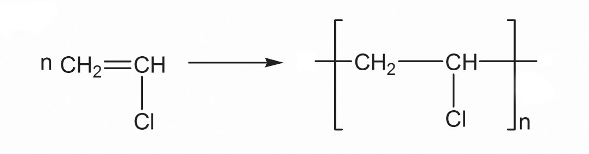<figcaption>Figure fig_ch07_p051_02 (Page 51)</figcaption></figure>
  <figure class="diagram-card" id="fig_ch07_p051_03">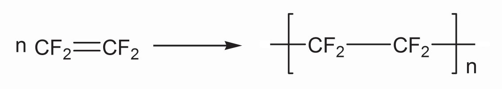<figcaption>Figure fig_ch07_p051_03 (Page 51)</figcaption></figure>
  <figure class="diagram-card" id="fig_ch07_p051_04"><figcaption>Figure fig_ch07_p051_04 (Page 51)</figcaption></figure>
  <div class="page-content">
    <p>Chemical reactions of organic compounds</p>
    <p>Vinylchloride</p>
    <p>Polyvinyl Chloride (PVC)</p>
    <p>Teflon is a polymer which is familiar to us. It is used for coating on
the inner surface of non-stick cookware. Its monomer is
tetrafluoroethene. Look at the equation which shows the
polymerisation process taking place here.</p>
    <p>Teflon</p>
    <p>Tetrafluoroethene</p>
    <p>Table 7.2 given below includes some familiar polymers and their
monomers. Complete the table suitably.
Monomer</p>
    <p>Polymer</p>
    <p>Use</p>
    <p>. . . . . . .</p>
    <p>PVC</p>
    <p>. . . . . . .</p>
    <p>Ethene</p>
    <p>. . . . . . .</p>
    <p>. . . . . . .</p>
    <p>Isoprene
. . . . . . .</p>
    <p>Natural rubber
(Polyisoprene)
Teflon</p>
    <p>. . . . . . .</p>
    <p>. . . . . . .</p>
    <p>Table 7.2</p>
    <p>Combustion of Hydrocarbons
Most of the hydrocarbons are used as fuels. Kerosene, Petrol, LPG
etc. are some among these.
When hydrocarbons burn they combine with the oxygen
in the air to form CO2 and H2O along with heat and light.
This process is called combustion.
CH4 +</p>
    <p>2O2 → CO2 +</p>
    <p>2H2O + Heat</p>
    <p>123</p>
  </div>
</section><section class="page-section" id="page-52">
  <div class="page-header"><span class="page-number">Page 52</span></div>
  <figure class="diagram-card" id="fig_ch07_p052_01"><figcaption>Figure fig_ch07_p052_01 (Page 52)</figcaption></figure>
  <figure class="diagram-card" id="fig_ch07_p052_02"><figcaption>Figure fig_ch07_p052_02 (Page 52)</figcaption></figure>
  <div class="page-content">
    <p>Chemistry $ Standard - X</p>
    <p>You might have understood that hydrocarbons are used as fuels
because of the exothermic nature of the combustion process.
$</p>
    <p>Butane is the important component in the domestic fuel LPG.
Can you write the balanced chemical equation for the
combustion of butane (C4H10)?</p>
    <p>Thermal Cracking
Some hydrocarbons with high molecular masses, when heated in
the absence of air undergo decomposition to form hydrocarbons
with lower molecular masses. This process is called Thermal
cracking.
A number of products are made in this way. Propane is one of the
simplest hydrocarbons which can undergo thermal cracking.
Examine the equation for the thermal cracking of propane.
CH3 − CH2 − CH3 → CH2 = CH2 + CH4
Propane</p>
    <p>Ethane</p>
    <p>Methane</p>
    <p>When hydrocarbons with larger number of carbon atoms undergo
thermal cracking, the carbon chain can undergo cleavage or
breaking in a number of ways. The products formed as a result of
thermal cracking depend on the nature of the hydrocarbons getting
cracked, temperature and pressure. See another example given
below.
CH3 − CH2 − CH2 − CH2 − CH2 − CH2 − CH3→ CH3 − CH2 − CH2− CH3 + CH3 − CH = CH2
Heptane</p>
    <p>Butane</p>
    <p>Propene</p>
    <p>When saturated hydrocarbons are subjected to thermal cracking the
products formed contain both saturated and unsaturated
hydrocarbons.
Plastic wastes, which are polymers can be converted to simpler
molecules by thermal cracking. This helps to control pollution to
some extent.</p>
    <p>124</p>
  </div>
</section><section class="page-section" id="page-53">
  <div class="page-header"><span class="page-number">Page 53</span></div>
  <figure class="diagram-card" id="fig_ch07_p053_01"><figcaption>Figure fig_ch07_p053_01 (Page 53)</figcaption></figure>
  <figure class="diagram-card" id="fig_ch07_p053_02">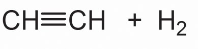<figcaption>Figure fig_ch07_p053_02 (Page 53)</figcaption></figure>
  <figure class="diagram-card" id="fig_ch07_p053_03">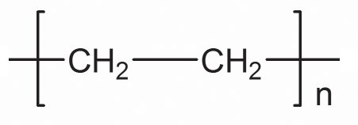<figcaption>Figure fig_ch07_p053_03 (Page 53)</figcaption></figure>
  <figure class="diagram-card" id="fig_ch07_p053_04">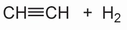<figcaption>Figure fig_ch07_p053_04 (Page 53)</figcaption></figure>
  <figure class="diagram-card" id="fig_ch07_p053_05">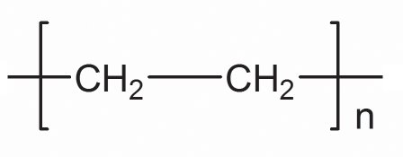<figcaption>Figure fig_ch07_p053_05 (Page 53)</figcaption></figure>
  <div class="page-content">
    <p>Chemical reactions of organic compounds</p>
    <p>Complete the tables 7.3 and 7.4 containing chemical reaction of
hydrocarbons.
→</p>
    <p>....................</p>
    <p>CH3Cl + Cl2</p>
    <p>→</p>
    <p>.................... + HCl</p>
    <p>....................</p>
    <p>→</p>
    <p>CH4 + ....................</p>
    <p>→</p>
    <p>....................</p>
    <p>→</p>
    <p>CO2 + H2O</p>
    <p>Table 7.3</p>
    <p>Find out the appropriate reactions and match the columns. A, B
and C suitably (Table 7.4).
Reactants
(A)</p>
    <p>Products
(B)</p>
    <p>Name of the reaction
(C)</p>
    <p>CH3−CH3 + Cl2</p>
    <p>CO2 + H2O</p>
    <p>Addition reaction</p>
    <p>C2H6 + O2</p>
    <p>CH 2=CH 2</p>
    <p>Thermal cracking</p>
    <p>nCH2=CH 2</p>
    <p>CH2=CH2 + CH4</p>
    <p>Substitution reaction</p>
    <p>CH 3−CH 2−CH 3</p>
    <p>CH3−CH2Cl + HCl</p>
    <p>Polymerisation
Combustion</p>
    <p>Table 7.4</p>
    <p>Some Important Organic Compounds
Now, let us familiarise ourselves with some organic compounds.</p>
    <p>1.</p>
    <p>Alcohols
Consider the two compounds given below.
CH 3– OH
CH 3– CH 2– OH</p>
    <p>Can&#x27;t you write the IUPAC names of these two compounds?</p>
    <p>125</p>
  </div>
</section><section class="page-section" id="page-54">
  <div class="page-header"><span class="page-number">Page 54</span></div>
  <figure class="diagram-card" id="fig_ch07_p054_01"><figcaption>Figure fig_ch07_p054_01 (Page 54)</figcaption></figure>
  <div class="page-content">
    <p>Chemistry $ Standard - X</p>
    <p>Among these, methanol is known as wood spirit and ethanol as grape
spirit. Alcohols are organic compounds containing the −OH functional
group.</p>
    <p>a.</p>
    <p>Methanol (CH3OH)</p>
    <p>Methanol is used as a solvent in the manufacture of paints and as a
reactant in the manufacture of varnish and formalin. Hence it is clear
that its industrial preparation is very important.
Methanol is industrially prepared by treating carbon monoxide with
hydrogen in the presence of a catalyst at high temperature and
pressure. It is a poisonous substance.
CH3 ⎯ OH</p>
    <p>CO + 2H2</p>
    <p>Methanol</p>
    <p>b.</p>
    <p>Ethanol (CH3CH2OH)</p>
    <p>Ethanol is an alcohol which is extensively used for industrial
purposes. Ethanol is used as an organic solvent and in the
manufacture of various organic compounds and paints. It can be
used as a fuel by itself or in combination with other compounds.
Complete the following word web including more uses of
ethanol.
Beverage
................</p>
    <p>Organic
compounds</p>
    <p>Ethanol</p>
    <p>................</p>
    <p>Fuel</p>
    <p>Solvent for medicine
Preservative</p>
    <p>Industrial preparation of Ethanol
Molasses is the concentrated solution of sugar (mother liquor) left
behind after separation of sugar crystal during the manufacture of
sugar. Ethanol is manufactured by fermenting dilute molasses by</p>
    <p>126</p>
  </div>
</section><section class="page-section" id="page-55">
  <div class="page-header"><span class="page-number">Page 55</span></div>
  <figure class="diagram-card" id="fig_ch07_p055_01"><figcaption>Figure fig_ch07_p055_01 (Page 55)</figcaption></figure>
  <figure class="diagram-card" id="fig_ch07_p055_02">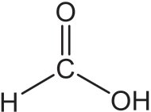<figcaption>Figure fig_ch07_p055_02 (Page 55)</figcaption></figure>
  <figure class="diagram-card" id="fig_ch07_p055_03">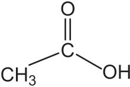<figcaption>Figure fig_ch07_p055_03 (Page 55)</figcaption></figure>
  <figure class="diagram-card" id="fig_ch07_p055_04">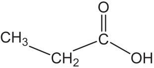<figcaption>Figure fig_ch07_p055_04 (Page 55)</figcaption></figure>
  <div class="page-content">
    <p>Chemical reactions of organic compounds</p>
    <p>adding yeast. Within a few days it changes to ethanol in the presence
of the enzymes invertase and zymase produced by yeast.
C12H22O11 + H2O</p>
    <p>Invertase</p>
    <p>Sucrose (Sugar)</p>
    <p>C 6 H 12 O 6</p>
    <p>Zymase</p>
    <p>C6H12O6 + C 6H12O6
Glucose</p>
    <p>Fructose</p>
    <p>2C2H5-OH + 2CO2
Ethanol</p>
    <p>The ethanol thus obtained will be about 8 - 10% strong. It is known
as &#x27;wash&#x27;. This is subjected to fractional distillation to get 95.6% strong
ethanol solution known as &#x27;rectified spirit&#x27;. Poisonous substances
are added to ethanol meant for industrial purposes to prevent its
misuse as beverage. This product is known as &#x27;denatured spirit&#x27;. If
methanol is used as a poison for denaturing then the product is
called methylated spirit. Ethanol of purity above 99% is known as
absolute alcohol. A mixture of absolute alcohol and petrol, known
as &#x27;power alcohol&#x27; is used as fuel in automobiles. Ethanol is also
manufactured from starchy substances like barley, rice, tapioca etc.
2. Carboxylic Acids</p>
    <p>Carboxylic acids are compounds containing −COOH functional
group.
You know the IUPAC names of compounds like CH3−COOH, and
CH 3−CH 2−COOH</p>
    <p>See table 7.5 given below containing the names and structures of
some carboxylic acids.
Condensed
Formula</p>
    <p>Structural
Formula</p>
    <p>H ⎯ COOH</p>
    <p>CH3⎯ COOH
CH3 ⎯ CH2 ⎯ COOH</p>
    <p>IUPAC
name</p>
    <p>Common
name</p>
    <p>methanoic</p>
    <p>formic</p>
    <p>acid</p>
    <p>acid</p>
    <p>Ethanoic</p>
    <p>Acetic</p>
    <p>acid</p>
    <p>acid</p>
    <p>Propanoic
acid</p>
    <p>Propionic
acid</p>
    <p>Table 7.5</p>
    <p>127</p>
  </div>
</section><section class="page-section" id="page-56">
  <div class="page-header"><span class="page-number">Page 56</span></div>
  <figure class="diagram-card" id="fig_ch07_p056_01"><figcaption>Figure fig_ch07_p056_01 (Page 56)</figcaption></figure>
  <figure class="diagram-card" id="fig_ch07_p056_02"><figcaption>Figure fig_ch07_p056_02 (Page 56)</figcaption></figure>
  <figure class="diagram-card" id="fig_ch07_p056_03">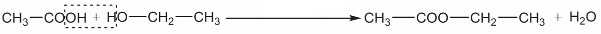<figcaption>Figure fig_ch07_p056_03 (Page 56)</figcaption></figure>
  <div class="page-content">
    <p>Chemistry $ Standard - X</p>
    <p>Most of the fruits contain carboxylic acids. Organic acids containing
more number of carbon atoms are called fatty acids.
About 5 - 8% ethanoic acid (acetic acid) is known as vinegar. Vinegar
is obtained when ethanol is subjected to fermentation in the presence
of air using the bacteria acetobacter.</p>
    <p>Industrial preparation of Ethanoic Acid
Ethanoic acid can be manufactured by treating methanol with carbon
monoxide in the presence of catalyst.
CH3 ⎯ OH + CO
methanol</p>
    <p>catalyst</p>
    <p>CH3 ⎯ COOH
ethanoic acid</p>
    <p>Can you list the uses of the ethanoic acid?
$</p>
    <p>In manufacture of rayon.</p>
    <p>$</p>
    <p>In rubber and silk industry.</p>
    <p>$
3. Esters</p>
    <p>Esters are obtained by the reaction between alcohols and carboxylic
acids. This reaction is called esterification. Esters have the pleasant
smell of fruits and flowers.
If so, what are the possible uses of esters? The ester ethyl ethanoate
is formed when ethanoic acid and ethanol react in the presence of
concentrated sulphuric acid. The equation for this reaction is given
below.</p>
    <p>Con. sulphuric acid</p>
    <p>ethanoic acid</p>
    <p>128</p>
    <p>ethanol</p>
    <p>ethyl ethanoate</p>
  </div>
</section><section class="page-section" id="page-57">
  <div class="page-header"><span class="page-number">Page 57</span></div>
  <figure class="diagram-card" id="fig_ch07_p057_01"><figcaption>Figure fig_ch07_p057_01 (Page 57)</figcaption></figure>
  <div class="page-content">
    <p>Chemical reactions of organic compounds</p>
    <p>From the structural formulae of esters isn&#x27;t it clear that their
functional group is ⎯ COO⎯?
Examine the given structural formulae and select the esters. You
may also identify the chemicals required for their preparation.
1.</p>
    <p>CH 3– CH 2– COO – CH 3</p>
    <p>2.</p>
    <p>CH 3– CH 2– COOH</p>
    <p>3.</p>
    <p>CH 3– CH 2– CO –CH 3</p>
    <p>4.</p>
    <p>CH 3– OH</p>
    <p>5.</p>
    <p>CH 3– CH 2– CH 2OH</p>
    <p>6.</p>
    <p>CH 3– COOH</p>
    <p>7.</p>
    <p>CH 3– COO –CH 2–CH 2–CH 3</p>
    <p>Soap
Oils and fats are esters formed by the combination of the alcohol,
glycerol, and the fatty acids like palmitic acid, stearic acid, oleic
acid etc. Soap is the salt formed when oils and fats react with
alkalies. Sodium hydroxide and pottasium hydroxide are
commonly used alkalies. Glycerol, which is obtained as the by
product in the industrial production of soap (Hot process) is used
for the preparation of several products like medicines and cosmetic
materials.
Let us make soap
Take 40 mL water in a beaker and dissolve 18 gm sodium
hydroxide (caustic soda) in it. Allow the solution to cool. Add
100 gm coconut oil to this solution in small quantities and stir
it well. The soap formed is allowed to solidify in moulds.
Soaps having different colours and smells are obtained on
adding different colouring materials and perfumes.
Let us look how soap removes dirt. Soap has an oil soluble non
polar end and a water soluble polar end. The hydro carbon part in
soap dissolves in oil and the ionic part (polar end) dissolves in
water. So in the presence of soap, dirt can be easily removed.
Moreover, soap decreases the surface tension of water and as a</p>
    <p>129</p>
  </div>
</section><section class="page-section" id="page-58">
  <div class="page-header"><span class="page-number">Page 58</span></div>
  <figure class="diagram-card" id="fig_ch07_p058_01"><figcaption>Figure fig_ch07_p058_01 (Page 58)</figcaption></figure>
  <div class="page-content">
    <p>Chemistry $ Standard - X</p>
    <p>result the clothes are soaked well. Soap molecules act as a link
between water and dirt and remove the dirt.</p>
    <p>Detergent
Like soap, detergents are cleansing agents. Similar to soaps, they
also have an oil soluble non polar end and a water soluble polar
end. Detergents are made from hydro carbons obtained from coal
and petroleum. Most detergents are salts of sulphonic acids. Let us
do an activity.
Take 10 mL distilled water in a test tube and take the same volume
of hard water in another test tube. Add a few drops of soap solution
to both the test tubes and shake well. Do both the test tubes contain
the same quantity of foam? Which test tube contains more foam?
What do you infer?
Let us do another experiment.
Take 10 mL each of hard water in two test tubes. Add a few drops of
soap solution in the first test tube and add the same amount of
detergent solution in the second one. Shake both the test tubes well.
What do you observe?
Which test tube contains more foam?
Soap does not lather well in hard water. The hardness of water is
due to dissolved calcium and magnesium salts in it. These salts react
with soap to form insoluble compounds resulting in the decrease of
lather. But detergents do not give insoluble components on reaction
with these salts. Hence detergents are more effective than soaps in
hard water. Similarly, detergents can also be used in acidic solutions.
But the excessive use of the detergents causes environmental
problems. The micro organisms in water cannot decompose the
components of detergents. Hence the detergents released into water
leads to the destruction of aquatic life. For example, the detergents
which contain phosphate increases the growth of algae and limits
the quantity of oxygen. Therefore, it decreases the quantity of oxygen
for the breath of the organisms in water and causes their destruction.
List out the merits and demerits of detergents, compared to soaps.</p>
    <p>130</p>
  </div>
</section><section class="page-section" id="page-59">
  <div class="page-header"><span class="page-number">Page 59</span></div>
  <figure class="diagram-card" id="fig_ch07_p059_01"><figcaption>Figure fig_ch07_p059_01 (Page 59)</figcaption></figure>
  <figure class="diagram-card" id="fig_ch07_p059_02"><figcaption>Figure fig_ch07_p059_02 (Page 59)</figcaption></figure>
  <figure class="diagram-card" id="fig_ch07_p059_03"><figcaption>Figure fig_ch07_p059_03 (Page 59)</figcaption></figure>
  <div class="page-content">
    <p>Chemical reactions of organic compounds</p>
    <p>Let us assess
1.</p>
    <p>2.
3.</p>
    <p>4.</p>
    <p>Given below are two chemical equations.
a.</p>
    <p>CH2 = CH2 + H2 → A</p>
    <p>b.</p>
    <p>A + Cl2</p>
    <p>Sunlight</p>
    <p>B + HCl</p>
    <p>Identify the compounds &#x27;A&#x27; and &#x27;B&#x27;. Name these reactions.
Name the important chemical reactions of hydrocarbons.
Give one example for each.
Write the chemical formula of propane. Write the names
and structural formulae of two compounds that may be
formed during its substitution reaction with chlorine.
Complete the equation for the following chemical reaction.
Name this reaction.
CH3 – CH2 – CH2 – CH3 + ... Ο2 → __________ + __________</p>
    <p>5.</p>
    <p>Which of the given molecules can form polymers?
Butane, Propane, Propene, Methane, Butene</p>
    <p>Extended Activities
1.</p>
    <p>You are familiar with different chemical reactions of
hydrocarbons. Identify the situations in daily life in which
such reactions are used.</p>
    <p>2.</p>
    <p>List the different uses of ethanol. Prepare an essay on its
adverse effects on human body and the related social issues
when it is used as a beverage.</p>
    <p>3.</p>
    <p>You know how to make soap, don&#x27;t you? Try to prepare
soaps of different colours and fragrance. Prepare a short
note on the chemistry of soaps.</p>
    <p>131</p>
  </div>
</section><section class="page-section" id="page-60">
  <div class="page-header"><span class="page-number">Page 60</span></div>
  <figure class="diagram-card" id="fig_ch07_p060_01"><figcaption>Figure fig_ch07_p060_01 (Page 60)</figcaption></figure>
  <div class="page-content">
    <p>Chemistry $ Standard - X</p>
    <p>Notes</p>
    <p>132</p>
  </div>
</section><section class="page-section" id="page-61">
  <div class="page-header"><span class="page-number">Page 61</span></div>
  <figure class="diagram-card" id="fig_ch07_p061_01"><figcaption>Figure fig_ch07_p061_01 (Page 61)</figcaption></figure>
  <div class="page-content">
    <p>Chemical reactions of organic compounds</p>
    <p>Notes</p>
    <p>133</p>
  </div>
</section><section class="page-section" id="page-62">
  <div class="page-header"><span class="page-number">Page 62</span></div>
  <figure class="diagram-card" id="fig_ch07_p062_01"><figcaption>Figure fig_ch07_p062_01 (Page 62)</figcaption></figure>
  <div class="page-content">
    <p>Chemistry $ Standard - X</p>
    <p>Notes</p>
    <p>134</p>
  </div>
</section><section class="page-section" id="page-63">
  <div class="page-header"><span class="page-number">Page 63</span></div>
  <div class="page-content">
    <p>Let&#x27;s save water
Keralites mainly depend on wells as the main source of drinking water. We should
conserve the wells which are the primary source of ground water in and around our
locality. The contamination of such sources of water causes water-borne diseases
like typhoid, cholera, jaundice etc.
Precautions to be taken to avoid contamination of ground water sources (wells)
 Do not bath or wash clothes near wells.
 Keep the well covered with nets of proper size.
 Keep the bucket and rope used to draw water clean.
 Cattle sheds, compost pits etc., should be built at least 7.5m away from wells.
 Septic tanks and toilets should be built at a safe distance away from the well.
 Prevent rain water from flowing into the well by constructing suitable walls</p>
    <p>around the well.</p>
    <p> Disinfect well water at adequate intervals.</p>
    <p>How to disinfect well water?
Add 2.5 g bleaching powder to 1000 litre water (approx. to size of a small match
box). Allow it to settle and pour the clear liquid into the well. This well water can be
used for domestic purposes after 6 hours. The following table shows the presence
of certain components and their permissible quantity in drinking water. It is also
essential to assess the quality of drinking water often. There are government
analytical laboratories under different departments for testing the quality of water.
Make use of their service.
The admissible amount of contents in drinking water:
Constituent
Foul smell/taste
pH
Soluble content
Hardness
Iron
Fluoride
Chloride
Choliform bacteria</p>
    <p>Permissible quantity
Nil
6.5 - 8.5
500 mg/l
300mg/l
0.3mg/l
0.6 - 1.2 mg/l
250mg/l
Nil</p>
    <p>Kerala State Pollution Control Board
Pattom.P.O., Thiruvananthapuram - 695004
Tel: 0471 - 2318153, 2318155 Fax: 2318152
Website: www.keralapcb.org</p>
  </div>
</section><section class="page-section" id="page-64">
  <div class="page-header"><span class="page-number">Page 64</span></div>
  <figure class="diagram-card" id="fig_ch07_p064_01"><figcaption>Figure fig_ch07_p064_01 (Page 64)</figcaption></figure>
  <div class="page-content">
    <p>CHILDREN&#x27;S RIGHTS
Dear Children,
Wouldn’t you like to know about your rights? Awareness about your rights will inspire
and motivate you to ensure your protection and participation, thereby making social
justice a reality. You may know that a commission for child rights is functioning in our
state called the Kerala State Commission for Protection of Child Rights.
Let’s see what your rights are:
• Right to freedom of speech and
expression.
• Right to life and liberty.
• Right to maximum survival and
development.
• Right to be respected and accepted
regardless of caste, creed and colour.
• Right to protection and care against
physical, mental and sexual abuse.
• Right to participation.
• Protection from child labour and
hazardous work.
• Protection against child marriage.
• Right to know one’s culture and live
accordingly.</p>
    <p>• Protection against neglect.
• Right to free and compulsory
education.
• Right to learn, rest and leisure.
• Right to parental and societal care,
and protection.</p>
    <p>Major Responsibilities
• Protect school and public facilities.
• Observe punctuality in learning
and activities of the school.
• Accept and respect school
authorities, teachers, parents and
fellow students.
• Readiness to accept and respect
others regardless of caste, creed or
colour.</p>
    <p>Contact Address:</p>
    <p>Kerala State Commission for Protection of Child Rights
&#x27;Sree Ganesh&#x27;, T. C. 14/2036, Vanross Junction
Kerala University P. O., Thiruvananthapuram - 34, Phone : 0471 - 2326603
Email: childrights.cpcr@kerala.gov.in, rte.cpcr@kerala.gov.in
Website : www.kescpcr.kerala.gov.in
Child Helpline - 1098, Crime Stopper - 1090, Nirbhaya - 1800 425 1400
Kerala Police Helpline - 0471 - 3243000/44000/45000</p>
    <p>Online R. T. E Monitoring : www.nireekshana.org.in</p>
  </div>
</section>
    </main>

    <footer>
      <div class="nav-bar"><a href="chapter_06_nomenclature_of_organic_compounds_and_isomerism_part_2.html">← Chapter 6: Nomenclature of Organic Compounds and Isomerism (Part 2)</a><a href="index.html">☰ Index</a><span class="nav-bar disabled"></span></div>
      <p style="text-align: center; font-size: 0.85rem; color: var(--text-muted); margin-top: 2rem;">
        Kerala SCERT Class 10 Chemistry (English Medium) - Extracted Study Text
      </p>
    </footer>
  </div>
</body>
</html>
